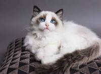

Průměrná cena koťátka plemene Ragdoll v České republice se obvykle pohybuje mezi 15 000 a 30 000 Kč, v závislosti na kvalitě, registraci s průkazem původu a genetických testech rodičů. Koťátka určená pro výstavy nebo chov s výborným rodokmenem mohou stát i více než 30 000 Kč. Naopak kotě bez průkazu původu nebo z méně prestižního chovu může být levnější, kolem 10 000 Kč. Cena často zahrnuje očkování, odčervení, testy rodičů a průkaz původu, takže je důležité při nákupu zohlednit všechny tyto faktory. Vždy se vyplatí vybírat důvěryhodného a zkušeného chovatele, aby bylo koťátko zdravé a dobře socializované.
Celkové náklady na chov jedné Ragdoll kočky se tak mohou pohybovat přibližně takto: za krmivo a doplňky přibližně 1 500–2 500 Kč měsíčně, tedy kolem 18 000–30 000 Kč ročně. Veterinární péče, očkování a odčervení vyjdou na 3 000–5 000 Kč ročně. Vybavení, jako pelíšky, škrabadla a hračky, představuje jednorázově 5 000–10 000 Kč. Testy rodičů a registrace koťat mohou stát 2 000–5 000 Kč navíc. Celkem tedy počítej s ročními náklady kolem 28 000–50 000 Kč na jednu kočku, přičemž neplánované výdaje mohou částku ještě zvýšit.
